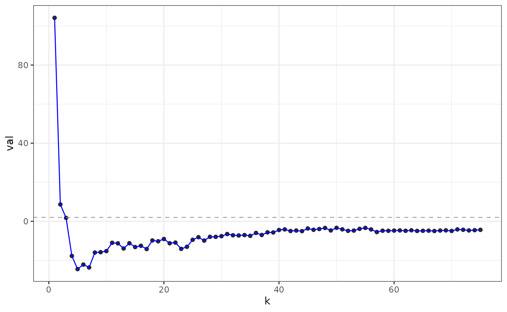
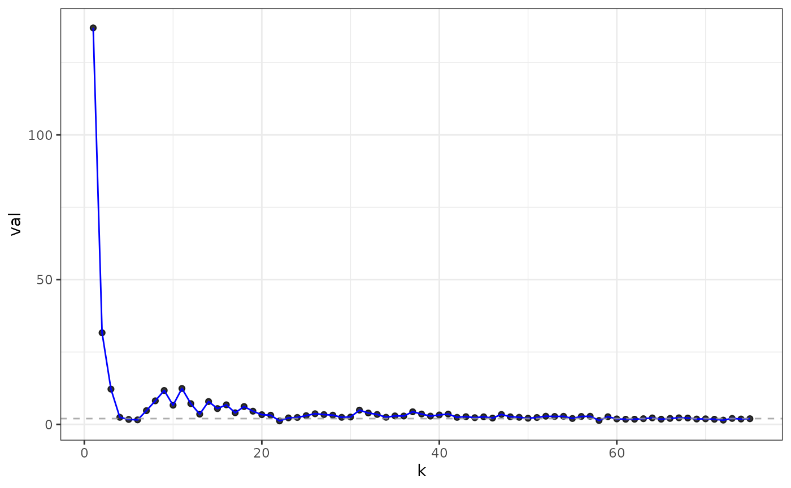
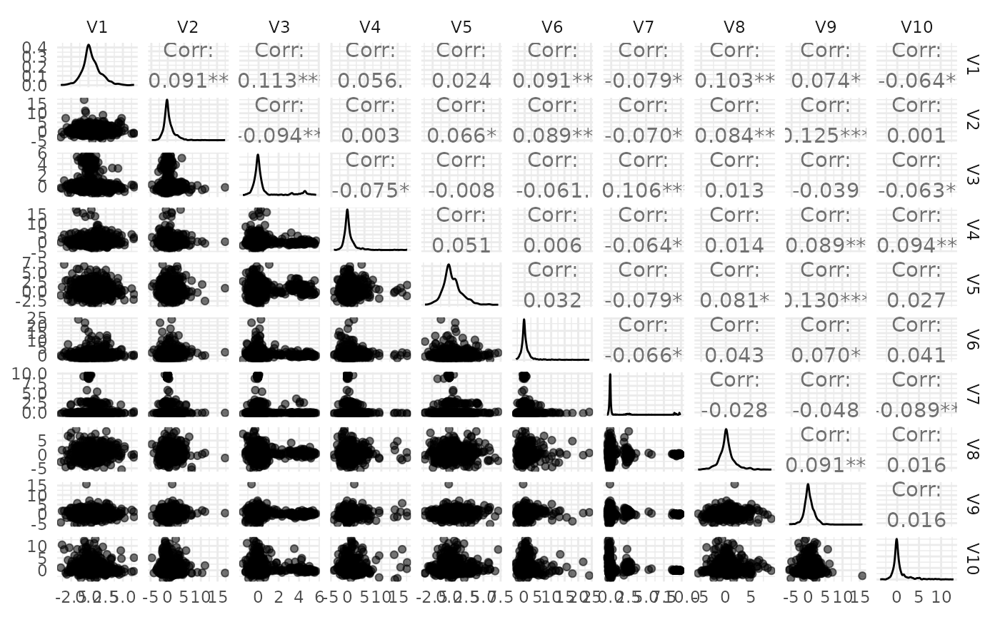

library(dplyr)
#>
#> Attaching package: 'dplyr'
#> The following objects are masked from 'package:stats':
#>
#> filter, lag
#> The following objects are masked from 'package:base':
#>
#> intersect, setdiff, setequal, union
library(tidyr)
library(netmediate)
library(tidygraph)
#>
#> Attaching package: 'tidygraph'
#> The following object is masked from 'package:stats':
#>
#> filter
library(igraph)
#>
#> Attaching package: 'igraph'
#> The following object is masked from 'package:tidygraph':
#>
#> groups
#> The following object is masked from 'package:netmediate':
#>
#> V
#> The following object is masked from 'package:tidyr':
#>
#> crossing
#> The following objects are masked from 'package:dplyr':
#>
#> as_data_frame, groups, union
#> The following objects are masked from 'package:stats':
#>
#> decompose, spectrum
#> The following object is masked from 'package:base':
#>
#> union
library(ggplot2)
library(gdim)
#> Loading required package: Matrix
#>
#> Attaching package: 'Matrix'
#> The following objects are masked from 'package:tidyr':
#>
#> expand, pack, unpack
library(vsp)
library(invertiforms)
#>
#> Attaching package: 'invertiforms'
#> The following object is masked from 'package:base':
#>
#> transform
data(reddit, package = "netmediate")
# so the concern with this analysis was the embeddings themselves looked like trash at first
# regularizing A -> L_tau helped a lot, as did consider each sub-reddit separately
# should check if considering each subreddit separately is sufficient
theme_set(theme_minimal())So embedding the post-word adjacency matrix on its pretty much leads to trash
okcupid <- reddit |>
activate(nodes) |>
filter(subreddit == "OkCupid" | node_type == "word" )
okcupid |>
as_tibble() |>
count(subreddit)
#> # A tibble: 2 × 2
#> subreddit n
#> <chr> <int>
#> 1 OkCupid 12915
#> 2 NA 59861
A_okc <- okcupid |>
as_incidence_matrix(sparse = TRUE) |>
as("CsparseMatrix")
ecvs_A_okc <- gdim::eigcv(A_okc, k_max = 75, laplacian = FALSE)
plot(ecvs_A_okc)
But if you use the regularized Laplacian you get much better clusters.

The question then is how precisely to do the regularization to make the magic work. Here I’ll use a diagnostic that Karl and I developed together to explore this.
library(invertiforms) # RoheLab/invertiforms
library(RSpectra)
library(scales)
library(tidyr)
library(dplyr)
rank <- 50
num_tau <- 10
tau <- 10^seq(-2, 4, length.out = num_tau)
laplacians <- tibble(tau = tau) %>%
mutate(
scaler = purrr::map(tau, ~ RegularizedLaplacian(A_okc, .x, .x)),
L_tau = purrr::map(scaler, ~ transform(.x, A_okc))
)
decomposed <- laplacians %>%
mutate(
svd = purrr::map(L_tau, svds, k = rank)
)
cumulative_participation <- function(U) {
sum(rowSums(U^2)^2)
}
localization <- decomposed %>%
mutate(
u = purrr::map_dbl(svd, ~ cumulative_participation(.x$u)),
v = purrr::map_dbl(svd, ~ cumulative_participation(.x$v))
)
# these are the same now but might differ for rectangular A
mean_rs <- mean(rowSums(A_okc))
mean_cs <- mean(colSums(A_okc))
localization %>%
select(-scaler, -L_tau, -svd) %>%
gather(subspace, localization, u, v) %>%
ggplot() +
aes(tau, localization, color = subspace, group = subspace) +
geom_line() +
geom_vline(xintercept = mean_rs, linetype = "dashed") +
geom_vline(xintercept = mean_cs, linetype = "dashed", color = "purple") +
scale_color_viridis_d(begin = 0.15, end = 0.85) +
scale_x_log10(
breaks = trans_breaks("log10", function(x) 10^x),
labels = trans_format("log10", math_format(10^.x))
) +
theme_minimal()
fa_L_okc <- vsp(
A_okc,
rank = 50,
degree_normalize = TRUE,
tau_row = 100,
tau_col = 100
)
# also, anonymization totally failed
screeplot(fa_L_okc)
plot_ipr_pairs(fa_L_okc)
plot_mixing_matrix(fa_L_okc)
#> Warning: The `x` argument of `as_tibble.matrix()` must have unique column names if
#> `.name_repair` is omitted as of tibble 2.0.0.
#> ℹ Using compatibility `.name_repair`.
#> ℹ The deprecated feature was likely used in the vsp package.
#> Please report the issue at <https://github.com/RoheLab/vsp/issues>.
#> This warning is displayed once every 8 hours.
#> Call `lifecycle::last_lifecycle_warnings()` to see where this warning was
#> generated.
plot_varimax_y_pairs(fa_L_okc, 1:10)
#> Registered S3 method overwritten by 'GGally':
#> method from
#> +.gg ggplot2
plot_varimax_z_pairs(fa_L_okc, 1:10)
(Right) Topic defining words
these look pretty good to me
y_hubs <- fa_L_okc |>
get_varimax_y(1:fa_L_okc$rank) |>
rlang::set_names(nm = c("id", paste0("y", 1:fa_L_okc$rank))) |>
tidyr::gather(
factor,
loading,
dplyr::contains("y"),
-id
) |>
dplyr::group_by(factor) |>
dplyr::top_n(n = 10, wt = abs(loading)) |>
arrange(factor, desc(loading))
DT::datatable(y_hubs)(Left) topic defining posts
also look pretty good to me
data(reddit_fulltext, package = "netmediate")
z_hubs <- fa_L_okc |>
get_varimax_z(1:fa_L_okc$rank) |>
rlang::set_names(nm = c("id", paste0("z", 1:fa_L_okc$rank))) |>
tidyr::gather(
factor,
loading,
dplyr::contains("z"),
-id
) |>
dplyr::group_by(factor) |>
dplyr::top_n(n = 10, wt = abs(loading)) |>
arrange(factor, desc(loading)) |>
left_join(reddit_fulltext, by = "id")
DT::datatable(z_hubs)Causal estimates use regularized graph Laplacian embeddings for OkCupid data
# here we construct our "custom" embeddings
iform <- RegularizedLaplacian(A_okc, 100, 100)
L_okc <- transform(iform, A_okc)
max_rank <- 50
s_max <- RSpectra::svds(L_okc, max_rank, max_rank)
X_max <- s_max$u %*% diag(sqrt(s_max$d))
# and now we plug them into the product-of-coefs estimator
curve_custom <- sensitivity_curve_custom(okcupid, score ~ flair, X_max)
curve_custom
#> # A tibble: 98 × 6
#> term estimand estimate conf.low conf.high rank
#> <chr> <chr> <dbl> <dbl> <dbl> <int>
#> 1 flairmale nde -1.09 -1.67 -0.509 2
#> 2 flairmale nie -0.00667 -0.0696 0.0562 2
#> 3 flairmale nde -1.02 -1.61 -0.444 3
#> 4 flairmale nie -0.0719 -0.145 0.000706 3
#> 5 flairmale nde -1.01 -1.59 -0.433 4
#> 6 flairmale nie -0.0832 -0.159 -0.00755 4
#> 7 flairmale nde -0.706 -1.29 -0.121 5
#> 8 flairmale nie -0.391 -0.508 -0.274 5
#> 9 flairmale nde -0.736 -1.32 -0.149 6
#> 10 flairmale nie -0.360 -0.488 -0.232 6
#> # ℹ 88 more rows
plot(curve_custom) +
theme_classic(18)